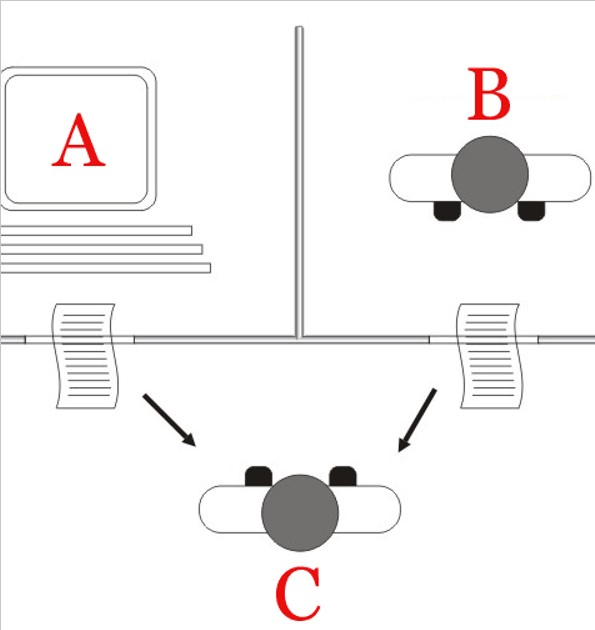

Frank Coelho de Alcantara - 2021
Um artefato de código que, quando executado, permite a interação entre seres humanos e máquinas usando um conjunto diversificado de canais que podem incluir desde a voz até gestos. Conhecidos como: conversational AI bot, AI assistant, intelligent virtual assistant, virtual customer assistant, digital assistant, conversational agent, virtual agent, conversational Interface, ...
Uma máquina que fala com gente!
Recebe um conjunto de informações em linguagem natural, divide essa informação em componentes semânticos, produz um nível de entendimento sobre estas informações e determina uma resposta apropriada.
Engloba um conjunto de algoritmos e soluções tecnológicas que permitem que máquinas transformem dados estruturados em linguagem natural, escrita, vocalizada ou sinalizada.
Subconjunto do processamento de linguagem natural que inclui o processamento de uma informação em linguagem natural e permite a extração de sentido desta informação. Entendimento que irá definir a ação a ser tomada.
Começa com Turing, no artigo Computer Machinary and Intelligence. Quando Turing propôs o famoso teste de identificação de máquinas.
Um máquina em uma sala, uma pessoa em outra e, finalmente, uma terceira pessoa, conversando, naturalmente com a máquina e a outra pessoa sem conseguir definir quem é quem.
Este teste é irrelevante do ponto de vista do desenvolvimento da tecnologia. Algumas máquina clamam ter passado por este teste mas, isso não teve nenhum impacto no desenvolvimento de novas tecnologias.
Baseado em Regras: processo básico e histórico, o algoritmo responde apenas no formato definido por um conjunto de regras. Atualmente este modelo é mais interativo, em lugar de respostas, o sistema oferece opções de botões para que o usuário vá reduzindo o escopo do seu problema. Muito comum na web.
Palavras chave: algum conteúdo de aprendizagem de máquina, analisa a intensão do usuário (intent) por meio de um conjunto de palavras chaves e determina a probabilidade de resposta em relação a estas palavras.
Contextual: são os mais avançados, no momento. Trata-se se uma combinação entre as técnicas de regras, o uso de palavras chave e a busca semântica de significado. Google Dialog Flow, Google Assistente, Cortana, Alexa, Siri, Chatterbot
O uso de bibliotecas talvez seja a forma mais simples de construir um Chatbot, usando Python. Em inglês, destacam-se pela facilidade a Chatterbot e a Rasa.
Em português, em testes realizados em 2020, a biblioteca biblioteca Chatterbot teve desempenho mediano.
Ainda não testei a Rasa em ambiente acadêmico mas conheço implementações práticas desta biblioteca em português.